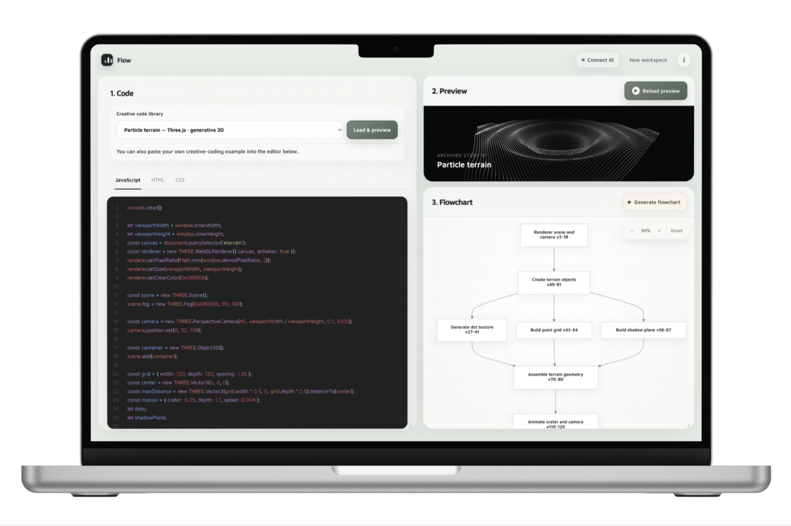
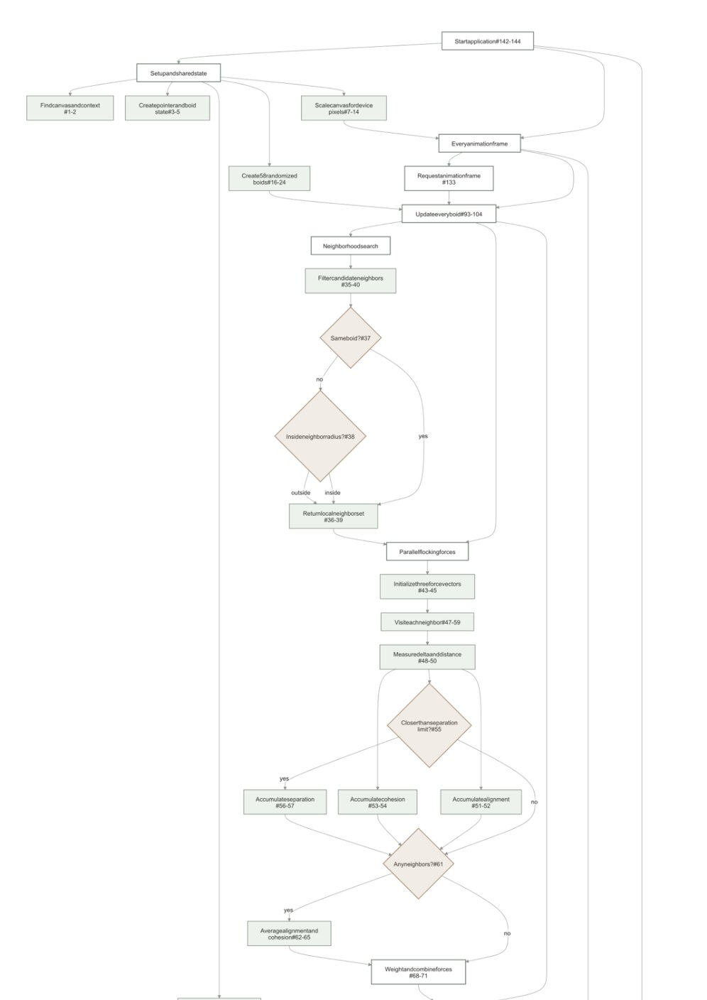
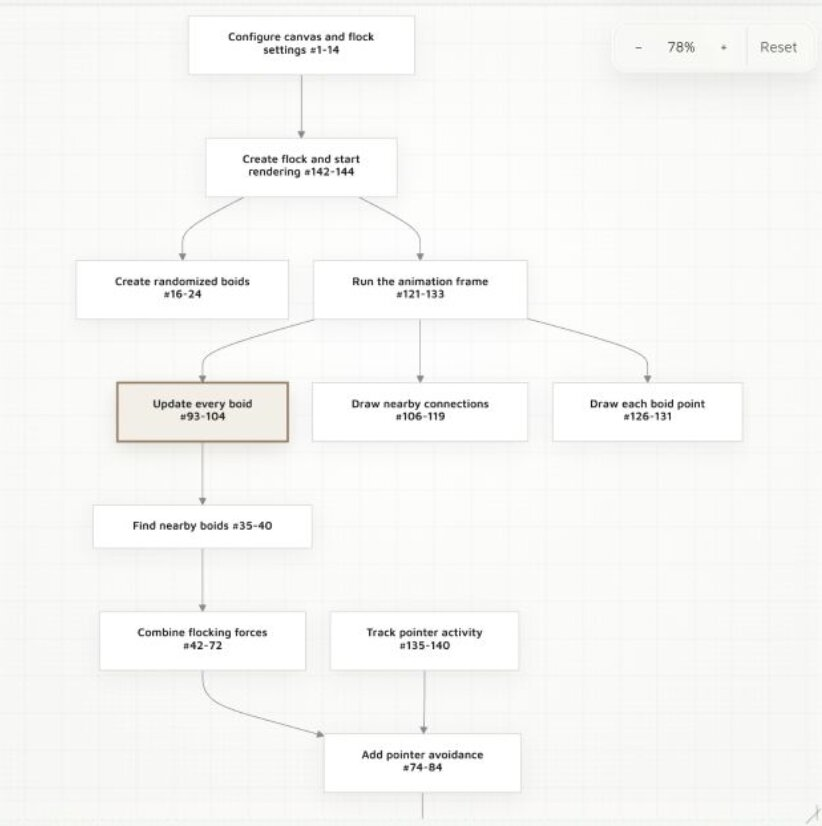
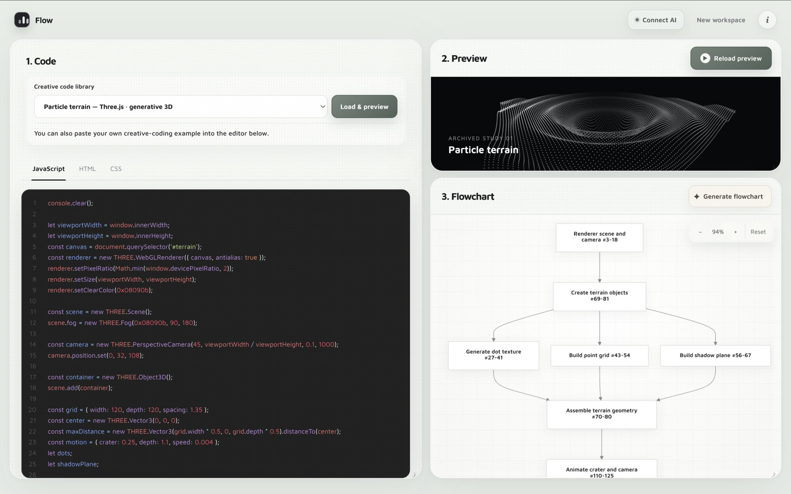

Flowcode
Overview
Flowcode is an LLM-assisted interface that connects creative code with an interactive structural flowchart and live visual output. I joined the project at the Barnard Design Tools Lab under the guidance of Professor Tiffany Tseng. From September 2024 to January 2025, I contributed to the initial literature review, early sketches, and exploratory code prototypes. In 2026, I independently revisited the low-fidelity prototype and developed the high-fidelity web version shown here.
Project History and My Role
I worked on Flowcode in two phases. During the lab phase, I contributed to the initial research, interface sketches, and exploratory code prototypes under Professor Tseng's guidance. Beginning in 2026, I independently revised the project, redesigning and implementing the current interface from the earlier low-fidelity prototype.
- Lab phase, Sep. 2024 to Jan. 2025
- Relevant literature review · early sketches · exploratory code prototypes
- Independent revision, 2026 to present
- Interaction design · interface redesign · high-fidelity prototyping
- Current implementation
- React · CodeMirror · LLM integration · responsive web development
- Delivery
- Testing · deployment · GitHub
Project Context
Creative coding is becoming easier to generate, but not necessarily easier to understand.
For beginners learning tools like Three.js and WebGL, even a relatively small project can contain unfamiliar functions, parameters, and relationships.
AI-assisted coding can produce a working project in seconds. It can also leave learners with code that works before they understand why.
At the Barnard Design Tools Lab, the project explored how AI might help beginners understand the structure of generated creative code. Under Professor Tiffany Tseng's guidance, I contributed to the initial literature review, early sketches, and code prototypes.
The early research considered flowcharts as one way to make program structure visible while keeping the underlying code accessible.
Final Artifact
Code
A CodeMirror editor keeps the source available and highlights relevant ranges as learners navigate.
Live Preview
The rendered output ties abstract program logic to the visual behavior it produces.
Interactive Flowchart
An LLM maps essential systems into nodes that link directly back to the code.
Key Design Moments
Choosing examples that actually stress-tested the system
Problem Simple UI examples did not show why structural visualization mattered.
Decision Build four visually and structurally different creative-coding studies.
Result The examples became both learning content and product stress tests.
Shrinking complexity without hiding the code
The early low-fidelity flowcharts represented nearly every meaningful function and relationship. They were comprehensive but overwhelming for a beginner.
During the 2026 independent revision, I simplified the prompt strategy and information hierarchy so that each view focused on roughly 11 to 13 essential nodes.


Comprehensive CuratedThe flowchart stopped trying to reproduce the entire program. It became an entry point: enough structure to orient a learner, with the source always available for depth.
The question shifted from “How do I visualize all of this code?”
to “What does a beginner need to see first?”
Making three representations feel like one interface

Constraint Equal space crowded the screen; separate screens weakened the relationships.
Decision Place code and flowchart side by side—the strongest direct relationship—and keep the live preview continuously visible.
Interaction Selecting a node points to its exact code while resizing changes emphasis without breaking context.
The three panels stay visible together so learners can compare structure, source code, and visual output without losing context.
Prototype Status
In the 2026 independent revision, I developed the earlier low-fidelity prototype into the working, responsive web prototype shown here.
I focused on reducing dense generated flowcharts to a navigable set of essential nodes while preserving direct links to the underlying code.
The current prototype tests how AI can expose the structure behind generated code while keeping the source available for inspection.
Reflection
Helping beginners requires choosing what to show first and tying abstract structure to something they can inspect.
For Flowcode, that meant giving learners several ways to understand the same program: its structure, the code behind it, and the visual result it creates.
The same interaction model could also support other dense materials, such as academic readings.
I am interested in how AI can give people an entry point into difficult material while keeping the original material available.